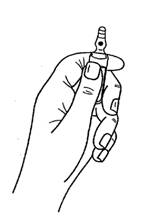
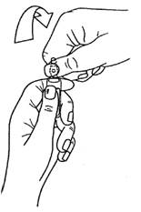

RÉSUMÉ DES CARACTÉRISTIQUES DU PRODUIT
ANSM - Mis à jour le : 29/05/2013
NIMBEX 2 mg/ml, solution injectable/pour perfusion
2. COMPOSITION QUALITATIVE ET QUANTITATIVE
Bésilate de cisatracurium ................................................................................................................. 2,68 mg
Quantité correspondant à cisatracurium ............................................................................................ 2,00 mg
Pour 1 ml.
1 ampoule de 2,5 ml renferme 5 mg de cisatracurium.
1 ampoule de 5 ml renferme 10 mg de cisatracurium.
1 ampoule de 10 ml renferme 20 mg de cisatracurium.
1 ampoule de 25 ml renferme 50 mg de cisatracurium.
Excipients:
Pour la liste complète des excipients, voir rubrique 6.1.
Solution injectable/pour perfusion.
Solution incolore à jaune pâle ou jaune verdâtre. Pratiquement sans particule visible.
4.1. Indications thérapeutiques
Le cisatracurium est un curare non dépolarisant de durée d'action intermédiaire pour administration intraveineuse.
NIMBEX est indiqué au cours des interventions chirurgicales ainsi qu'en réanimation, chez l'adulte et l'enfant âgé de 1 mois et plus. Il peut être utilisé comme adjuvant de l'anesthésie générale, ou de la sédation en Unité de Soins Intensifs (USI) pour relâcher les muscles striés, faciliter l'intubation trachéale et la ventilation assistée.
4.2. Posologie et mode d'administration
NIMBEX ne doit être administré que par des anesthésistes ou des praticiens familiarisés avec l'utilisation et l'action des curares, ou sous leur contrôle. Du matériel d'intubation trachéale, d'assistance respiratoire et d'oxygénation artérielle adéquat doit être disponible.
NIMBEX ne doit pas être mélangé dans la même seringue, ou administré simultanément dans le même cathéter que le propofol ou tout autre produit alcalin tel que le thiopental sodique (voir rubrique 6.2).
NIMBEX ne contient aucun conservateur antimicrobien et est destiné à être utilisé chez un seul patient.
4.2.1 Conseils de surveillance
Comme avec tous les curares, la surveillance des fonctions neuromusculaires lors de l'utilisation de NIMBEX est recommandée afin d'ajuster individuellement les besoins.
4.2.2 Utilisation par injection intraveineuse en bolus
4.2.2.1 Posologie chez l'adulte
Intubation trachéale: la dose de NIMBEX recommandée pour l'intubation chez l'adulte est de 0,15 mg/kg de poids corporel. Cette dose procure de bonnes ou d'excellentes conditions d'intubation 120 secondes après l'injection, après induction de l'anesthésie par du propofol.
Des doses plus élevées réduisent le délai d'installation du bloc neuromusculaire.
Le tableau ci-dessous résume les données pharmacodynamiques moyennes obtenues après injection de NIMBEX à des doses de 0,1 à 0,4 mg/kg de poids corporel chez des patients adultes sains au cours d'anesthésies avec des opioïdes (thiopental/fentanyl/midazolam) ou du propofol.
|
Dose de NIMBEX |
Type d'anesthésie |
Délai de suppression de 90 % de T1* |
Délai de suppression maximum de T1* |
Délai de récupération spontanée de 25 % de T1* |
|
|
0,1 |
opioïdes |
3,4 |
4,8 |
45 |
|
|
0,15 |
propofol |
2,6 |
3,5 |
55 |
|
|
0,2 |
opioïdes |
2,4 |
2,9 |
65 |
|
|
0,4 |
opioïdes |
1,5 |
1,9 |
91 |
* T1: simple twitch ou première composante d'une réponse au train-de-quatre du muscle adducteur du pouce après stimulation électrique supramaximale du nerf cubital.
L'anesthésie à l'enflurane ou l'isoflurane peut prolonger (jusqu'à 15 %) la durée d'action clinique d'une dose initiale de NIMBEX.
Entretien: le bloc neuromusculaire peut être prolongé par des doses d'entretien de NIMBEX. Une dose de 0,03 mg/kg de poids corporel, administrée au cours d'une anesthésie avec des opioïdes ou du propofol, procure environ 20 minutes supplémentaires de curarisation cliniquement efficace. L'injection de plusieurs doses d'entretien ne provoque pas d'augmentation progressive de la durée de curarisation.
Récupération spontanée: lorsque la récupération spontanée du bloc neuromusculaire est commencée, sa vitesse est indépendante de la dose de NIMBEX administrée. Au cours d'une anesthésie avec des opioïdes ou du propofol, les délais moyens de récupération spontanée de 25 à 75 % et de 5 à 95 % sont d'environ 13 et 30 minutes respectivement.
Antagonisation: le bloc neuromusculaire induit par NIMBEX est aisément antagonisé avec des doses standard d'anticholinestérasiques. Après administration d'un anticholinestérasique à environ 10 % de récupération de T1, les délais moyens de récupération de 25 à 75 % et jusqu'à récupération complète (T4/T1 supérieur ou égal à 0,7) sont respectivement de 4 et 9 minutes environ.
4.2.2.2 Posologie chez l'enfant
Intubation trachéale (chez l'enfant âgé de 1 mois à 12 ans): Comme chez l'adulte, la dose d'intubation recommandée de NIMBEX est de 0,15 mg/kg de poids corporel, administrée en 5 à 10 secondes. Cette dose procure de bonnes à excellentes conditions d'intubation 120 secondes après l'injection de NIMBEX. Les tableaux ci-dessous présentent les données pharmacodynamiques pour cette dose.
NIMBEX n'a pas été étudié pour l'intubation chez les enfants des classes ASA III - IV. Les données disponibles de l'utilisation de NIMBEX chez les enfants âgés de moins de 2 ans subissant une intervention chirurgicale majeure ou prolongée sont limitées.
Chez les enfants âgés de 1 mois à 12 ans, NIMBEX a une durée d'action plus courte et un profil de récupération spontanée plus rapide que ceux observés chez l'adulte, dans des conditions anesthésiques similaires.
De légères différences dans le profil pharmacodynamique ont été observées entre les enfants âgés de 1 à 11 mois et ceux âgés de 1 à 12 ans; elles sont résumées dans les tableaux ci dessous:
Enfants âgés de 1 à 11 mois
|
Dose de NIMBEX |
Type d'anesthésie |
Délai de suppression de 90 % de T1 (min.) |
Délai de suppression maximum de T1 (min.) |
Délai de récupération spontanée de 25 % T1 (min.) |
|
|
0,15 |
halothane |
1,4 |
2,0 |
52 |
|
|
0,15 |
opioïdes |
1,4 |
1,9 |
47 |
Enfants âgés de 1 à 12 ans
|
Dose de NIMBEX |
Type d'anesthésie |
Délai de suppression de 90 % de T1 (min.) |
Délai de suppression maximum de T1 (min.) |
Délai de récupération spontanée de 25 % T1 (min.) |
|
|
0,15 |
halothane |
2,3 |
3,0 |
43 |
|
|
0,15 |
opioïdes |
2,6 |
3,6 |
38 |
Quand l'utilisation de NIMBEX n'est pas requise pour l'intubation: une dose inférieure à 0,15 mg/kg peut être utilisée.
Les données pharmacodynamiques correspondant aux doses de 0,08 et 0,1 mg/kg chez les enfants âgés de 2 à 12 ans sont présentées dans le tableau ci-dessous:
|
Dose de NIMBEX |
Type d'anesthésie |
Délai de suppression de 90 % de T1 (min.) |
Délai de suppression maximum de T1 (min.) |
Délai de récupération spontanée de 25 % T1 (min.) |
|
|
0,08 |
halothane |
1,7 |
2,5 |
31 |
|
|
0,1 |
opioïdes |
1,7 |
2,8 |
28 |
L'administration de NIMBEX après suxaméthonium n'a pas été étudiée chez l'enfant (voir rubrique 4.5).
La durée d'action clinique de NIMBEX semble être allongée jusqu'à 20 % par l'halothane. Il n'y a pas de données concernant l'utilisation de NIMBEX chez les enfants au cours d'anesthésies avec les autres agents anesthésiques halogénés. Néanmoins, l'action curarisante de NIMBEX devrait être également potentialisée par ces agents.
Entretien (chez l'enfant âgé de 2 à 12 ans): le bloc neuromusculaire peut être prolongé par des doses d'entretien de NIMBEX. Chez l'enfant âgé de 2 à 12 ans, une dose de 0,02 mg/kg de poids corporel administrée au cours d'une anesthésie à l'halothane procure environ 9 minutes supplémentaires de curarisation cliniquement efficace. L'injection de plusieurs doses d'entretien ne provoque pas d'augmentation progressive de la durée de curarisation.
Les données disponibles sont insuffisantes pour recommander une dose d'entretien chez l'enfant de moins de 2 ans. Néanmoins, des données très limitées provenant des études cliniques chez l'enfant de moins de 2 ans suggèrent qu'une dose d'entretien de 0,03 mg/kg pourrait prolonger le bloc neuromusculaire d'une durée pouvant aller jusqu'à 25 minutes, lors d'anesthésie aux opioïdes.
Récupération spontanée: lorsque la récupération spontanée du bloc neuromusculaire est commencée, sa vitesse est indépendante de la dose de NIMBEX administrée.
Au cours d'une anesthésie avec des opioïdes ou l'halothane, les délais moyens de récupération spontanée de 25 à 75 % et de 5 à 95 % sont respectivement de 11 et 28 minutes.
Antagonisation: le bloc neuromusculaire induit par l'administration de NIMBEX est aisément antagonisé avec des doses standard d'anticholinestérasiques. Après administration d'un anticholinestérasique à environ 13 % de récupération de T1, les délais moyens de récupération de 25 à 75 % et jusqu'à récupération complète (T4/T1 supérieur ou égal à 0,7) sont respectivement de 2 et 5 minutes environ.
4.2.3 Utilisation en perfusion intraveineuse
4.2.3.1 Posologie chez l'adulte et chez l'enfant de 2 à 12 ans:
L'entretien du bloc neuromusculaire peut être obtenu par perfusion continue de NIMBEX. Un débit initial de perfusion de 3 µg/kg de poids corporel par minute (0,18 mg/kg/h) est recommandé pour rétablir 89 à 99 % de suppression de T1 après l'obtention de signes de récupération spontanée.
Après une période initiale de stabilisation du bloc neuromusculaire, un débit de 1 à 2 µg/kg de poids corporel par minute (0,06 à 0,12 mg/kg/h) semble suffisant pour maintenir le bloc neuromusculaire à ce niveau chez la plupart des patients.
Il peut être nécessaire de réduire jusqu'à 40 % le débit de perfusion si NIMBEX est administré au cours d'anesthésies à l'isoflurane ou à l'enflurane (voir rubrique 4.5).
Le débit de perfusion dépendra de la concentration de cisatracurium dans la solution de perfusion, du degré de bloc neuromusculaire souhaité et du poids du patient. Le tableau ci-dessous fournit des règles d'utilisation de NIMBEX non dilué.
Débit de perfusion de NIMBEX 2 mg/ml, solution injectable/pour perfusion:
|
Poids corporel du patient |
Dose (µg/kg/min) |
Débit de perfusion |
|
|||
|
1,0 |
1,5 |
2,0 |
3,0 |
|||
|
20 |
0,6 |
0,9 |
1,2 |
1,8 |
ml/h |
|
|
70 |
2,1 |
3,2 |
4,2 |
6,3 |
ml/h |
|
|
100 |
3,0 |
4,5 |
6,0 |
9,0 |
ml/h |
|
La perfusion continue à débit constant de NIMBEX ne provoque pas d'augmentation ou de diminution progressive du temps de curarisation.
Après arrêt de la perfusion de NIMBEX, la récupération spontanée du bloc neuromusculaire intervient à une vitesse comparable à celle obtenue après administration d'un bolus unique.
4.2.4 Posologie chez le nouveau-né (âgé de moins de 1 mois)
L'administration de NIMBEX chez le nouveau-né n'est pas recommandée dans la mesure où elle n'a pas été étudiée.
4.2.5 Posologie chez le sujet âgé
Aucune modification de posologie n'est nécessaire chez les sujets âgés. Chez ces patients, NIMBEX a un profil pharmacodynamique similaire à celui observé chez le patient adulte jeune mais, comme pour tous les autres curares, il peut avoir un délai d'action légèrement plus long.
4.2.6 Posologie chez l'insuffisant rénal
Aucune modification de posologie n'est nécessaire chez l'insuffisant rénal. Chez ces patients, NIMBEX a un profil pharmacodynamique similaire à celui observé chez les patients dont la fonction rénale est normale, mais il peut avoir un délai d'action légèrement plus long.
4.2.7 Posologie chez l'insuffisant hépatique
Aucune modification de posologie n'est nécessaire chez l'insuffisant hépatique sévère. Chez ces patients, NIMBEX a un profil pharmacodynamique similaire à celui observé chez les patients dont la fonction hépatique est normale, mais il peut avoir un délai d'action légèrement plus court.
4.2.8 Posologie chez le sujet atteint d'une pathologie cardiovasculaire
L'administration en injection rapide de doses de NIMBEX par injection en bolus rapide (en 5 à 10 secondes) à des patients adultes ayant une pathologie cardiovasculaire sévère (New York Heart Association Class I-III) et subissant une intervention pour pontage coronarien, n'a pas provoqué d'effets cardiovasculaires cliniquement significatifs aux doses utilisées (allant jusqu'à 0,4 mg/kg soit 8 fois la DE95). Cependant, les données pour des doses supérieures à 0,3 mg/kg sont limitées dans cette population de patients.
NIMBEX n'a pas été étudié chez les enfants subissant une intervention de chirurgie cardiaque.
4.2.9 Posologie chez le patient en Unité de Soins Intensifs (USI)
NIMBEX peut être administré en bolus et/ou en perfusion chez les adultes en USI.
Un débit de perfusion initial de 3 µg/kg de poids corporel par minute (0,18 mg/kg/h) est recommandé chez l'adulte en USI. Il peut exister d'importantes variations interindividuelles des besoins qui peuvent augmenter ou diminuer en fonction du temps. Au cours des essais cliniques, le débit moyen de perfusion a été de 3 µg/kg par minute [bornes: 0,5 à 10,2 µg/kg/min, 0,03 à 0,6 mg/kg/h].
Le délai médian de récupération spontanée totale après perfusion au long cours (jusqu'à 6 jours) de NIMBEX chez les patients en USI a été de 50 minutes environ.
Débit de perfusion de NIMBEX 5 mg/ml, solution injectable/pour perfusion:
|
Poids corporel du patient |
Dose (µg/kg/min) |
Débit de perfusion |
|
|||
|
1,0 |
1,5 |
2,0 |
3,0 |
|||
|
70 |
0,8 |
1,2 |
1,7 |
2,5 |
ml/h |
|
|
100 |
1,2 |
1,8 |
2,4 |
3,6 |
ml/h |
|
Le profil de récupération après perfusion de NIMBEX chez les patients en USI est indépendant de la durée de la perfusion.
NIMBEX est contre-indiqué chez les patients ayant des antécédents d'hypersensibilité au cisatracurium, à l'atracurium ou à l'acide benzène sulfonique (acide bésilique).
4.4. Mises en garde spéciales et précautions d'emploi
Le cisatracurium paralyse les muscles respiratoires tout autant que les autres muscles striés, mais n'a pas d'effet connu sur la conscience ou le seuil nociceptif. NIMBEX ne doit être administré que par des anesthésistes ou des praticiens familiarisés avec l'utilisation et l'action des curares, ou sous leur contrôle. Du matériel d'intubation trachéale, d'assistance respiratoire et d'oxygénation artérielle adéquat doit être disponible.
Lors de l'administration de NIMBEX une attention particulière sera portée aux patients qui ont des antécédents d'hypersensibilité à d'autres curares, car un taux élevé de réactions d'hypersensibilité croisée (supérieur à 50 %) entre les curares a été rapporté (voir rubrique 4.3).
Le cisatracurium n'a pas de propriétés vagolytiques ou ganglioplégiques significatives. Par conséquent, NIMBEX n'a aucun effet clinique significatif sur la fréquence cardiaque et ne neutralise pas la bradycardie induite par de nombreux agents anesthésiants ou par la stimulation vagale au cours des interventions chirurgicales.
Les patients atteints de myasthénie et d'autres pathologies neuromusculaires ont montré une sensibilité très fortement augmentée aux curares non dépolarisants. Par conséquent, il est recommandé de ne pas dépasser une dose initiale de 0,02 mg/kg de NIMBEX chez ces patients.
Les déséquilibres acido-basiques et/ou électrolytiques sévères peuvent augmenter ou diminuer la sensibilité des patients aux curares.
Il n'y a pas de données concernant l'utilisation de NIMBEX chez le nouveau-né de moins de 1 mois, en l'absence d'études dans cette population.
Le cisatracurium n'a pas été étudié chez les patients ayant des antécédents d'hyperthermie maligne. Les essais réalisés chez les porcs sensibles à l'hyperthermie maligne indiquent que le cisatracurium ne déclenche pas ce syndrome.
Il n'y a pas eu d'essai du cisatracurium chez les patients devant subir une intervention chirurgicale sous hypothermie induite (25°C à 28°C). Comme pour les autres curares, on peut s'attendre à ce que le débit de perfusion nécessaire pour entretenir un relâchement musculaire adéquat dans ces conditions soit significativement réduit.
Le cisatracurium n'a pas été étudié chez les brûlés; cependant, comme pour tous les curares non dépolarisants, si NIMBEX doit être administré à ces patients, il faut envisager la possibilité de devoir augmenter la posologie et celle d'une durée d'action plus courte.
NIMBEX est une solution hypotonique qui ne doit pas être perfusée dans la même tubulure qu'une transfusion sanguine.
Patients en Unité de Soins Intensifs (USI)
L'administration de laudanosine, métabolite du cisatracurium et de l'atracurium, à fortes doses chez des animaux de laboratoire, a été accompagnée d'hypotension transitoire et chez quelques espèces d'effets à type d'excitation cérébrale. Chez les espèces animales les plus sensibles, ces effets sont survenus pour des concentrations plasmatiques en laudanosine identiques à celles observées chez des patients en USI après perfusion prolongée d'atracurium.
Du fait d'un débit de perfusion recommandé plus faible avec le cisatracurium qu'avec l'atracurium, les concentrations plasmatiques de laudanosine sont trois fois plus faibles après administration de cisatracurium.
Il a été rapporté de rares cas de convulsions chez des patients en Unité de Soins Intensifs qui avaient reçu entre autre de l'atracurium. Ces patients présentaient, en général, un ou plusieurs facteurs prédisposant aux convulsions (par exemple: traumatisme crânien, encéphalopathie hypoxique, œdème cérébral, encéphalopathie virale, urémie). Une relation de cause à effet n'a pu être établie.
4.5. Interactions avec d'autres médicaments et autres formes d'interactions
Il a été montré que de nombreuses substances influencent l'importance et/ou la durée de l'action des curares non dépolarisants, notamment:
Potentialisation de l'effet curarisant:
· par les agents anesthésiants tels que l'enflurane, l'isoflurane, l'halothane (voir rubrique 4.2) et la kétamine,
· par d'autres curares non dépolarisants,
· par d'autres médicaments tels que:
o les antibiotiques (dont les aminoglycosides, les polymyxines, la spectinomycine, les tétracyclines, la lincomycine et la clindamycine),
o les anti-arythmiques (dont le propranolol, les inhibiteurs calciques, la lidocaïne, le procaïnamide et la quinidine),
o les diurétiques (dont le furosémide, et probablement les thiazidiques, le mannitol et l'acétazolamide),
o les sels de magnésium et de lithium,
o les ganglioplégiques (trimétaphan, hexaméthonium).
Une diminution de l'effet est constatée après administration chronique préalable de phénytoïne ou de carbamazépine.
L'administration préalable de suxaméthonium n'a aucun effet sur la durée du bloc neuromusculaire obtenu après des bolus de NIMBEX, ou sur l'adaptation du débit de perfusion.
L'administration de suxaméthonium pour prolonger les effets des curares non dépolarisants peut provoquer un bloc prolongé et complexe, difficile à antagoniser avec les anticholinestérasiques.
Rarement, certaines substances peuvent aggraver ou révéler une myasthénie latente, voire déclencher un syndrome myasthénique, provoquant ainsi une augmentation de la sensibilité aux curares non dépolarisants. Ces substances comprennent divers antibiotiques, des bêtabloquants (propranolol, oxprénolol), des anti-arythmiques (procaïnamide, quinidine), des médicaments utilisés en rhumatologie (chloroquine, D-pénicillamine), le trimétaphan, la chlorpromazine, les corticostéroïdes, la phénytoïne et le lithium.
Le traitement par des anti-cholinestérases utilisés habituellement dans le traitement de la maladie d'Alzheimer comme le donézépil, peut diminuer la durée et l'intensité du bloc neuromusculaire induit par le cisatracurium.
Il n'y a pas de données suffisantes concernant l'utilisation de NIMBEX chez les femmes enceintes. Les études pré-cliniques concernant les effets sur la grossesse, le développement embryo-fœtal, l'accouchement et le développement post-natal sont insuffisantes (voir rubrique 5.3). Le risque potentiel pour l'homme est inconnu.
NIMBEX ne doit pas être utilisé pendant la grossesse.
On ne sait pas si le cisatracurium ou ses métabolites passent dans le lait maternel.
4.7. Effets sur l'aptitude à conduire des véhicules et à utiliser des machines
Cette précaution n'est pas pertinente compte tenu de l'utilisation de NIMBEX. NIMBEX sera toujours utilisé en association avec des anesthésiques généraux, ainsi les précautions habituelles concernant l'exécution de tâches après une anesthésie générale doivent s'appliquer.
Les données provenant des essais cliniques ont été utilisées pour déterminer la fréquence des effets indésirables (de très fréquents à peu fréquents).
La classification selon la fréquence utilise la convention suivante: très fréquents (≥ 1/10), fréquents (≥ 1/100 et < 1/10), peu fréquents (≥ 1/1000 et < 1/100), rares (≥ 1/10 000 et < 1/1000) et très rares (< 1/10 000).
Données issues des essais cliniques
Affections cardiaques
Fréquent: bradycardie.
Affections vasculaires
Fréquent: hypotension.
Peu fréquent: rougeur cutanée.
Affections respiratoires, thoraciques et médiastinales
Peu fréquent: bronchospasme.
Affections de la peau et du tissu sous-cutané
Peu fréquent: éruption cutanée.
Données post-commercialisation
Affections du système immunitaire
Très rare: réaction anaphylactique.
Des réactions anaphylactiques plus ou moins sévères ont été observées après l'administration d'agents curarisants. Très rarement des réactions anaphylactiques sévères ont été rapportées chez des patients ayant reçu NIMBEX en association avec un ou plusieurs produits anesthésiques.
Affections musculo-squelettiques et systémiques
Très rare: myopathie, faiblesse musculaire.
Des cas de faiblesse musculaire et/ou de myopathie ont été rapportés après l'utilisation prolongée de myorelaxants chez des patients avec un état grave en USI. La plupart des patients recevaient de manière concomitante des corticostéroïdes. De tels cas ont été rarement rapportés en association avec NIMBEX et une relation de cause à effet n'a pas été établie.
Les principaux signes de surdosage attendus avec NIMBEX sont une paralysie musculaire prolongée et ses conséquences.
4.9.2 Conduite à tenir
Il est essentiel de maintenir la ventilation pulmonaire et l'oxygénation artérielle jusqu'à l'observation d'une récupération spontanée adéquate. La sédation totale est nécessaire, puisque la vigilance n'est pas modifiée par NIMBEX. La récupération peut être accélérée par l'administration d'anticholinestérasiques dès l'observation des premiers signes de récupération spontanée.
5. PROPRIETES PHARMACOLOGIQUES
5.1. Propriétés pharmacodynamiques
Classe pharmacothérapeutique: CURARE (relaxant musculaire), Code ATC: M03AC11.
Le cisatracurium est un relaxant du muscle strié, non dépolarisant, à durée d'action intermédiaire, de la famille des benzylisoquinolines.
Les études cliniques chez l'homme montrent que l'administration de NIMBEX n'est pas associée à une libération dose-dépendante d'histamine, même à des doses allant jusqu'à 8 fois la DE95.
5.1.1 Mode d'action
Le cisatracurium se lie aux récepteurs cholinergiques sur la plaque motrice pour antagoniser l'action de l'acétylcholine, provoquant un bloc compétitif de la transmission neuromusculaire. Cette action est aisément antagonisée par des anticholinestérasiques tels que la néostigmine ou l'édrophonium.
La DE95 du cisatracurium (dose requise pour obtenir une suppression de 95 % de la réponse du muscle adducteur du pouce à la stimulation du nerf cubital) a été estimée à 0,05 mg/kg de poids corporel au cours d'anesthésies avec opioïdes (thiopental/fentanyl/midazolam).
La DE95 du cisatracurium chez l'enfant au cours d'une anesthésie à l'halothane est de 0,04 mg/kg.
5.2. Propriétés pharmacocinétiques
Le cisatracurium est dégradé dans l'organisme, au pH et à température physiologiques, par la réaction d'Hoffmann (processus chimique) pour former de la laudanosine et un métabolite, l'acrylate monoquaternaire. L'acrylate monoquaternaire est hydrolysé par des estérases plasmatiques non spécifiques pour former un métabolite, l'alcool monoquaternaire. L'élimination du cisatracurium est en majorité indépendante des organes habituels d'élimination, mais le foie et les reins interviennent dans l'élimination de ses métabolites.
Ces métabolites ne possèdent aucune activité curarisante.
5.2.1 Pharmacocinétique chez l'adulte
La pharmacocinétique du cisatracurium, en analyse non compartimentale, est indépendante de la dose, dans l'intervalle de doses étudiées (0,1 à 0,2 mg/kg, c'est à dire 2 à 4 fois la DE95).
L'analyse pharmacocinétique de population confirme et élargit ces résultats jusqu'à 0,4 mg/kg (8 fois la DE95). Les paramètres pharmacocinétiques, après administration de doses de 0,1 et 0,2 mg/kg de cisatracurium à des patients adultes sains opérés, sont résumés dans le tableau ci-dessous:
|
Paramètre |
Intervalle des valeurs moyennes |
|
|
Clairance |
4,7 à 5,7 (ml/min)/kg |
|
|
Volume de distribution à l'équilibre |
121 à 161 ml/kg |
|
|
Demi-vie d'élimination |
22 à 29 min |
5.2.2 Pharmacocinétique chez le patient âgé
Il n'y a aucune différence cliniquement significative de pharmacocinétique du cisatracurium entre le patient âgé et l'adulte sain. Le profil de récupération est également inchangé.
5.2.3 Pharmacocinétique chez l'insuffisant rénal/hépatique
Il n'y a aucune différence cliniquement significative de pharmacocinétique du cisatracurium entre l'insuffisant rénal, ou hépatique, sévère et l'adulte sain. Leur profil de récupération est également inchangé.
5.2.4 Pharmacocinétique au cours des perfusions
La pharmacocinétique du cisatracurium après perfusion de NIMBEX est similaire à celle observée après injection en bolus unique. Le profil de récupération après perfusion de NIMBEX est indépendant de la durée de la perfusion et similaire à celui observé après injection en bolus unique.
5.2.5 Pharmacocinétique chez les patients en Unité de Soins Intensifs (USI)
La pharmacocinétique du cisatracurium chez les patients en USI sous perfusion prolongée est similaire à celle des adultes sains opérés, sous perfusion, ou après injection en bolus unique. Le profil de récupération après perfusion de NIMBEX chez les patients en USI est indépendant de la durée de la perfusion.
Les concentrations en métabolites sont plus élevées chez les patients en USI ayant des anomalies des fonctions rénale ou hépatique (voir rubrique 4.4). Ces métabolites n'ont pas d'activité curarisante.
5.3. Données de sécurité préclinique
Des études pertinentes de toxicité aiguë du cisatracurium n'ont pu être réalisées.
Pour les symptômes de toxicité, voir rubrique 4.9.
5.3.2 Toxicité subaiguë
Des études de toxicité après administrations répétées, pendant 3 semaines chez le chien et le singe, n'ont pas montré de signes de toxicité spécifiques au produit.
5.3.3 Mutagénicité
Le cisatracurium ne s'est pas montré mutagène lors des tests de mutagénicité sur bactéries, in vitro, pour des concentrations allant jusqu'à 5000 µg/plaque.
Lors d'une étude de cytogénétique in vivo chez le rat, aucune anomalie chromosomique significative n'a été constatée pour des doses allant jusqu'à 4 mg/kg administrées en sous-cutané.
Le cisatracurium s'est montré mutagène lors d'un test de mutagénicité in vitro sur cellules de lymphome de souris, à des concentrations supérieures ou égales à 40 µg/ml.
La pertinence clinique d'une seule réponse positive à un test de mutagénicité pour un produit administré de façon ponctuelle et/ou brève est discutable.
5.3.4 Carcinogénicité
Aucune étude de carcinogénèse n'a été effectuée.
5.3.5 Toxicologie de la reproduction
Il n'a pas été réalisé d'études de fertilité. Les études de reproduction chez le rat n'ont révélé aucun effet indésirable du cisatracurium sur le développement fœtal.
5.3.6 Tolérance locale
Une étude d'administration en intra-artériel chez le lapin a montré que l'injection de NIMBEX est bien tolérée et qu'aucune modification liée au produit n'a été observée.
Solution d'acide bésilique à 32 pour cent (qsp pH 3 à 3,8), eau pour préparations injectables.
Il a été démontré que la dégradation du bésilate de cisatracurium se produit plus rapidement dans du soluté de Ringer Lactate avec du glucose à 5 %, et dans du soluté de Ringer Lactate, que dans les solutions de perfusion énumérées dans la rubrique 6.6.
Ne pas utiliser de soluté de Ringer Lactate avec du glucose à 5 %, ni du soluté de Ringer Lactate comme diluant.
NIMBEX n'est stable qu'en solution acide et ne doit donc pas être mélangé, dans la même seringue ou la même ligne d'injection, avec des solutions alcalines telles que le thiopental sodique.
NIMBEX n'est pas compatible avec le ketorolac trométamol, ni l'émulsion injectable de propofol.
Durée de conservation avant dilution: 2 ans.
La stabilité chimique et physique habituelle a été démontrée pendant au moins 24 heures à 5°C et 25°C (voir rubrique 6.6).
D'un point de vue microbiologique, le produit doit être immédiatement utilisé. S'il n'est pas immédiatement utilisé, les durées et conditions de conservation habituelles avant l'utilisation sont de la responsabilité de l'utilisateur et ne devraient normalement pas excéder 24 heures à une température de 2 à 8°C, à moins que la reconstitution n'ait eu lieu dans des conditions d'asepsie contrôlées et validées.
6.4. Précautions particulières de conservation
A conserver au réfrigérateur (entre 2°C et 8°C).
Ne pas congeler.
A conserver dans l'emballage d'origine, à l'abri de la lumière.
Pour les conditions de conservation du médicament dilué, voir rubrique 6.3.
6.5. Nature et contenu de l'emballage extérieur
2,5 ml en ampoule (verre type I). Boîte de 5.
5 ml en ampoule (verre type I). Boîte de 5.
10 ml en ampoule (verre type I). Boîte de 5.
25 ml en ampoule (verre type I). Boîte de 2.
Toutes les présentations peuvent ne pas être commercialisées.
6.6. Précautions particulières d’élimination et de manipulation
Ce produit est à usage unique.
N'utiliser que des solutions limpides et incolores ou très légèrement colorées jaune à jaune/verdâtre. Le produit doit être contrôlé visuellement avant l'utilisation, et si l'aspect visuel a changé ou si le contenant est endommagé, le produit doit être jeté.
La dilution de NIMBEX dans des conditionnements en chlorure de polyvinyl ou polypropylène, est physiquement et chimiquement stable pendant au moins 24 heures à 5°C et 25°C à des concentrations comprises entre 0,1 et 2 mg/ml dans les solutés de perfusion suivants:
· solution de chlorure de sodium (0,9 pour cent poids/volume),
· solution de glucose (5 pour cent poids/volume),
· solution glucosée (4 pour cent poids/volume) sodique (0,18 pour cent poids/volume),
· solution glucosée (2,5 pour cent poids/volume) sodique (0,45 pour cent poids/volume),
Le produit ne contenant pas de conservateur antimicrobien, la dilution doit être effectuée juste avant utilisation, dans le cas contraire elle doit être conservée dans les conditions précisées à la rubrique 6.3.
NIMBEX est compatible avec les produits suivants qui sont utilisés couramment en péri-opératoire (administration continue à travers une tubulure en Y):
· chlorhydrate d'alfentanil,
· dropéridol,
· citrate de fentanyl,
· chlorhydrate de midazolam,
· citrate de sufentanil.
Lorsque d'autres substances sont administrées dans la même tubulure ou le même cathéter que NIMBEX, il est recommandé de rincer chaque substance avec un volume adéquat de solution intraveineuse adaptée, par exemple une solution de chlorure de sodium pour perfusion intraveineuse (0,9 pour cent poids/volume).
Mode d'emploi pour l'ouverture des ampoules
Les ampoules sont munies d'un système d'ouverture OPC (One Point Cut) et doivent être cassées selon les instructions suivantes:
· Maintenir avec la main la partie inférieure de l'ampoule comme indiqué dans la figure 1.
· Saisir la partie supérieure de l'ampoule avec l'autre main, le pouce posé sur le point coloré et exercer une pression comme indiqué sur la figure 2.
|
Figure 1. |
Figure 2. |
|
|
 |
 |
7. TITULAIRE DE L’AUTORISATION DE MISE SUR LE MARCHE
LABORATOIRE GALXOSMITHKLINE
100 ROUTE DE VERSAILLES
78163 MARLY-LE-ROI CEDEX
8. NUMERO(S) D’AUTORISATION DE MISE SUR LE MARCHE
· 559 534-0 ou 34009 559 534 0 1: 2,5 ml en ampoule (verre type I). Boîte de 5.
· 559 535-7 ou 34009 559 535 7 9: 5 ml en ampoule (verre type I). Boîte de 5.
· 559 536-3 ou 34009 559 536 3 0: 10 ml en ampoule (verre type I). Boîte de 5.
· 559 538-6 ou 34009 559 538 6 9: 25 ml en ampoule (verre type I). Boîte de 2.
9. DATE DE PREMIERE AUTORISATION/DE RENOUVELLEMENT DE L’AUTORISATION
[à compléter par le titulaire]
10. DATE DE MISE A JOUR DU TEXTE
[à compléter par le titulaire]
Sans objet.
12. INSTRUCTIONS POUR LA PREPARATION DES RADIOPHARMACEUTIQUES
Sans objet.
Liste I.
Réservé à l'usage hospitalier.